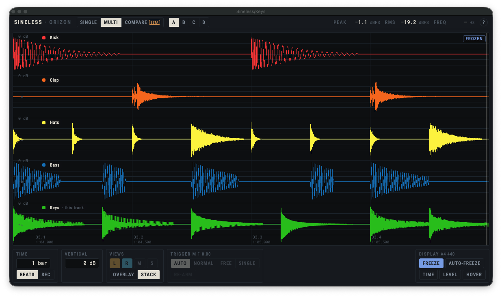

Sineless 0.6 · Plugin UI redesign · Step 1 of 6
The plugin works well and measures honestly, but its interface was built feature by feature. This is where it stands today, what the new design has to carry, and the principles we start from, taken from the Orizon brand.

1 2 3 4 5 6 7 8 9 10This redesign covers the interface and how it's used. What the plugin does, its default values and its keyboard behaviour stay as they are. The old design's layout rules don't carry over.
Every feature stays. Ranked by how often someone reaches for it; a first guess to confirm in the next step.
These come from the platform and the product, not from the old design.
| Constraint | Why |
|---|---|
| Runs in Safari 16.2's engine and WebView2 | The interface is a web page inside the plugin, on macOS 13.1+ and Windows 10+. |
| Fonts and images bundled with the plugin | A strict security policy: no network, no inline code. |
| At least 45 frames/s with 15 tracks | The plugin must stay light on the host. Blur and constant page updates cost frames. |
| Show only what was measured | "—" when there is no value, never 0. |
| Keys go to the host | Space for play and stop must keep working while the plugin is focused. |
| Any track name and colour | Lanes take the host's colours, which can be anything; Audio Units give none. |
| Hosts resize windows differently | Some give no resize edge, so the plugin needs its own grip or size presets. |
A draft, drawn from the brand: Apple, OpenAI and Spotify as references; minimal, confident, precise, warm.